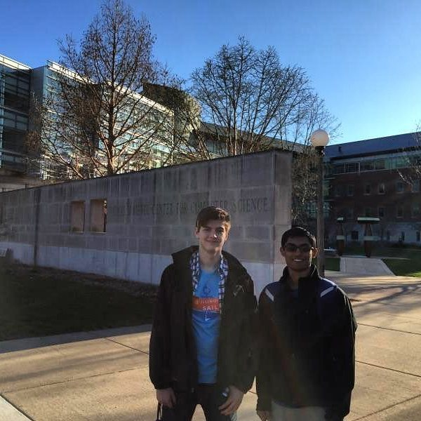

What I Do
I am a student pursuing my Bachelor's of Science in Computer Science at the University of Illinois -- Urbana-Champaign. I come from Lake in the Hills, IL, where I am an alumnus of Huntley High School.I am also a developer and core team member at Bilder, an institutional crowdfunding platform, student startup, and object of my sincerest pride. Entrepreneurship is my passion.
Résumé
Things I Enjoy
I am an avid fan of the Chicago Cubs, in addition to most other Chicago sports teams whose performances have not lately been up to the standard of inclusion in this short autobiography.My favorite television shows of all time are The Office and Breaking Bad, though lately I've been enjoying Rick and Morty quite a bit.
My game of choice is Tetris, and I fancy myself one of the best non-competitive players out there.
My days of competitive athletics are long gone, but I still enjoy working out several days per week.
My Natural Habitat(s)
To the right are some of my favorite memories including:- My first visit to the Siebel Center for Computer Science at UIUC
- Reading excerpts of Machiavelli to my cousins
- Senior Homecoming with my girlfriend (of 3 years and counting)
- Something thorny and unpleasant, and a cactus
